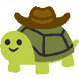
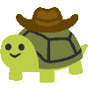

Hey There, I'm Ethan!
I'm a passionate programmer and game developer with multiple years of experience in C# and C++. I have worked in Unity3D and Godot for many years in addition to other engines and toolsets.
I love learning new skills and growing as a developer. Although coding is where I am most comfortable, I also have experience working with animations, asset production, and audio design.
 
